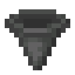

Storage
Storage Drives in a Drive Rack, joined by Storage Links to a Storage Terminal and to Ports, make one storage network. It keeps any number of kinds of item, finds any of them from the terminal, and moves them in and out of chests and machines on its own. Nothing in it needs power, and nothing switches off.

Drives and racks
A Storage Drive holds 262,144 items, of as many kinds as you like: a kind costs nothing but its items. What a drive holds goes with it, so a drive moved to another rack takes everything with it, and its tooltip says how full it is.
 Crafting
Crafting


 Crafting
Crafting


A Drive Rack holds eight drives. Beside each bay a light shows how full its drive is: dim while it is empty, teal while it has room, amber once it is three quarters full, red when it is full.
Links
Storage Links join racks, terminals and Ports into one network. Every storage block that touches another joins it, on any face, except a Port's front. There are no channels and no limit on how many blocks a network joins. Storage Links are not the signal cables models are wired with: the two never connect.
Crafting

The Storage Terminal
Crafting

The terminal shows everything its network keeps, with how many of each kind, and lights up once its network has somewhere to keep things.
- Click a kind to take a stack, right-click to take half, shift-click to move a stack into your inventory.
- Click the grid with a stack to put it in, right-click to put in one. Shift-click a stack in your inventory to put it away.
- The button beside the search box sorts by name (Az), by how many (#) or by mod (@); shift-click it to reverse.
The search box finds things by name, every word at once. Other facts take a sign before them:
| Search | Finds |
|---|---|
ingot | names holding "ingot" |
@minecraft | things from that mod |
#ingots | things with a tag holding "ingots" |
$hunger | tooltips holding "hunger" |
*copper | ids holding "copper" |
-iron | everything except what holds "iron" |
iron | gold | either one |
(log | planks) -oak | groups |
>64, <10, =1, >=1k | how many are kept (k for thousands, m for millions) |
@minecraft ingot -iron finds every ingot but iron, and >1k everything there are more than a thousand of.
Ports
A Port holds its front against an inventory (a chest, a barrel, a furnace or any other machine) and moves items between it and the network, 64 items a tick: 1,280 a second. Placed against a block, it faces that block; sneak-use one of its faces to turn its front there. Its sides show what it does, and light while it moves things.
Crafting


- Import takes everything from the inventory into the network; with a filter, only those kinds. Under a furnace it takes the furnace's output.
- Export puts the kinds its filter names into the inventory, as long as the network has them and the inventory has room.
- Stock keeps the inventory holding a set number of each kind its filter names: it tops each one up from the network, and takes any extra back.
- Window opens the inventory to the network, which keeps items there and takes them out as if it were a drive. A window with a higher priority is filled first, and a filter limits what may go in.
To set the filter, click one of its slots with a stack, or shift-click the stack in your inventory; click a slot empty-handed to clear it. The screen says how many items the Port moved in the last second.
A Port can also filter by what things are. Put a filter model in the slot beside its screen: a Checkpoint, or a Relay Card tuned to a Model Server, whose model passes Sorting (Models and Tests). Then a filter slot holding something renamed Food, Plants, Wood, Stone, Ores or Tools stands for that whole kind: importing, the Port takes every thing the model says is of it; exporting, it hands out every such thing the network holds. The model is asked about each thing once, by name, as the sorting test asks; a thing it is not sure of counts as other. Stocking keeps to things, not kinds.
Assemblers
An Assembler on the network crafts one recipe from what the network keeps, and puts the result back. Draw the recipe in its grid the way you would on a crafting table: click a cell with a stack to put that kind there, or empty-handed to clear it. The grid holds pictures, not items. What the recipe makes shows beside it, and the Assembler waits while its screen is open, so a recipe half drawn never crafts.
Tell it how many of the result to keep. Whenever the network holds fewer, it crafts, up to four crafts a tick, as long as the network has the ingredients; whatever a recipe leaves behind, such as an empty bucket, goes back into the network. One Assembler can keep another stocked: one that keeps sticks lets one that makes torches go on as long as there is coal.
Crafting

Asking for things
What the network's Assemblers can make shows in the terminal too: with Craft in place of a count when there is none of it, and with a teal corner when there is. Click it, or middle-click or Ctrl-click one there is some of, to ask for an amount. The terminal plans it as you type: a tree of everything it takes, each step with how many come from storage, how many crafts make the rest (×) and how many are missing (−).
Start it, and the network's Assemblers work through the plan, any number of jobs at once; Assemblers drawing the same recipe share its crafts. What a job makes along the way it keeps to itself until it is done, so nothing else takes it first. A job may start with something missing: it waits, and goes on as soon as what it lacks reaches the network. When it is done, everything it made goes into the network, and you hear so wherever you are.
Jobs, beside the search box, lists the jobs running on the network, how far each has got and what it waits for; × stops one, and what it has made so far goes back into the network.
A Drive Rack, a light beside each drive in it.
The Storage Terminal finds anything the network keeps.
A Port importing the chest in front of it.
Iron IngotWaferRedstone DustStorage DriveTensor CasingCopper IngotDrive RackGlassStorage LinkGlass PaneStorage TerminalHopperPistonPort
 Crafting TableWeight CrystalAssembler
Crafting TableWeight CrystalAssembler